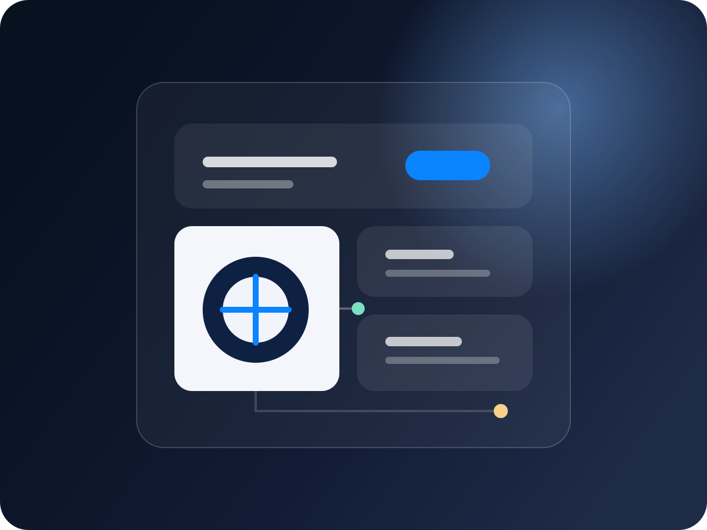
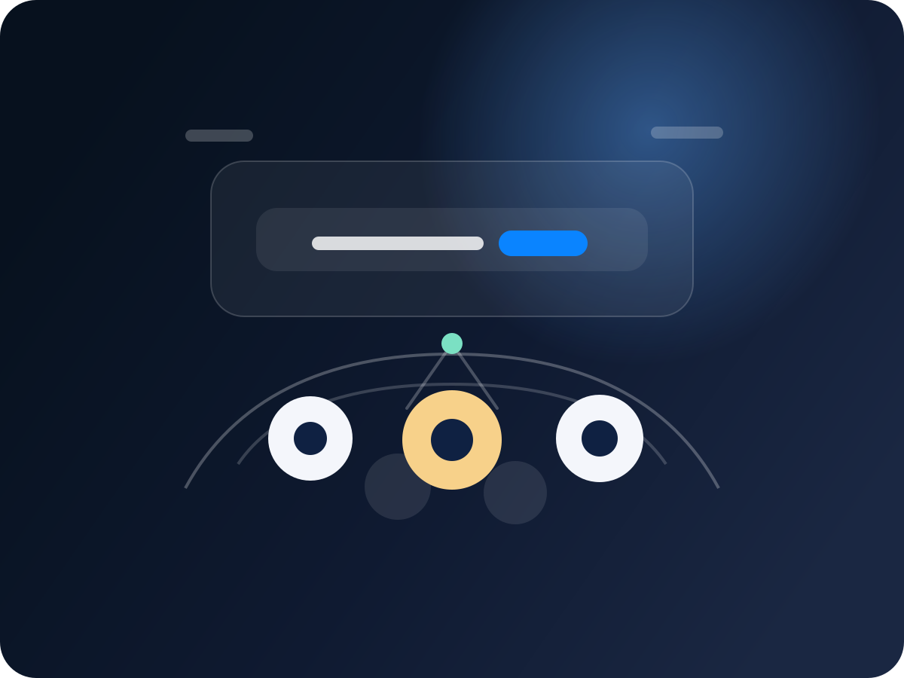
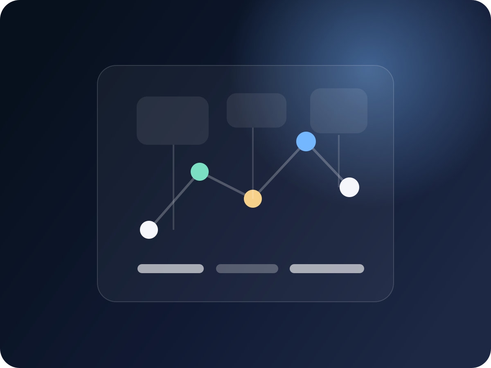
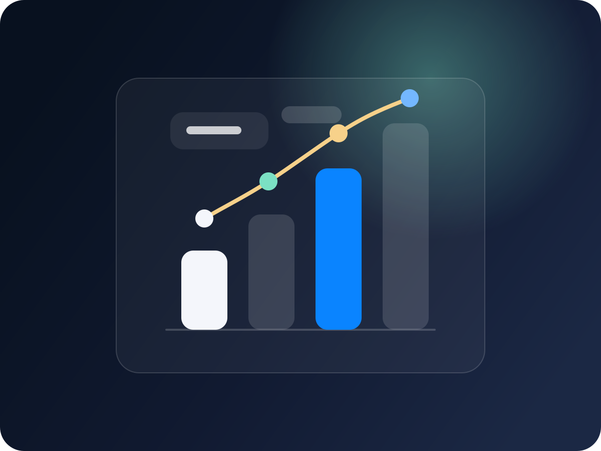

01 · 知识体系
系统化知识沉淀
从公开文章到知识树再到主题刊物，把分散经验整合成可持续访问的学习体系。
同盟文章列表聚合同盟成员公开文章与一线技术观察。
架构知识树按主题梳理架构议题，便于持续学习与共创。
《架构之道》刊物把案例、观点与趋势内容收束为专题阅读。

围绕内容、活动、城市网络与加入方式，快速建立对同盟资源优势和品牌调性的整体认知。
它不是零散链接集合，而是围绕成员成长、行业交流与城市协同持续运转的一套品牌体系。
从公开文章到知识树再到主题刊物，把分散经验整合成可持续访问的学习体系。

从近期活动到往期回顾，同盟把线下交流和线上沉淀连接成持续发生的现场。

从成员介绍、线上社区到地区社群，同盟让跨城市的同行连接更直接、更持续。

通过专访、专题与官方展示，把成员经验沉淀为可传播、可复用、可持续积累的品牌内容。
从成长值规则到年度记忆，再到个人与地区排行，同盟把长期参与沉淀为可被看见的成长轨迹。

每个城市都有自己的议题和社群温度，但对外保持统一的同盟入口与品牌节奏。